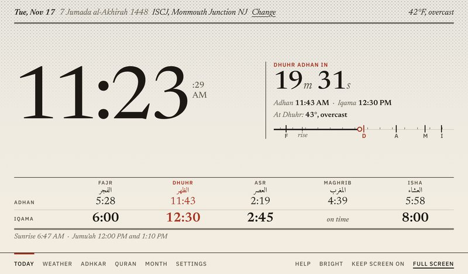
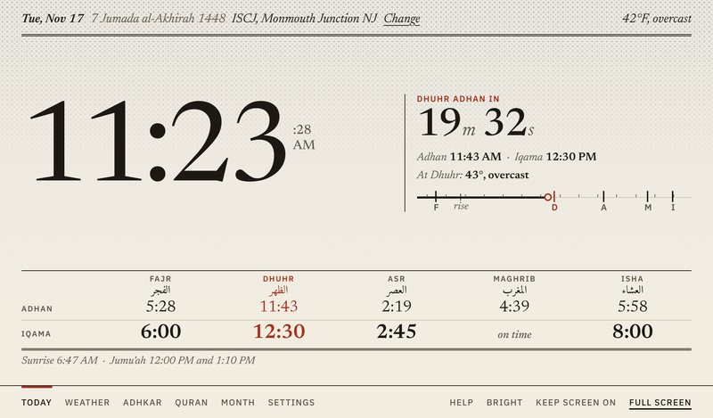
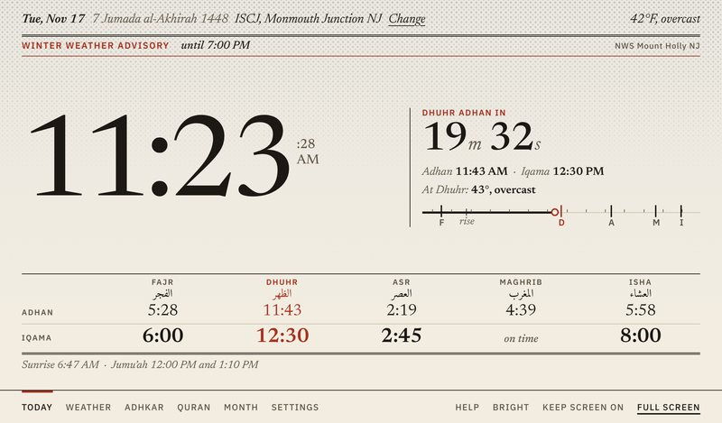
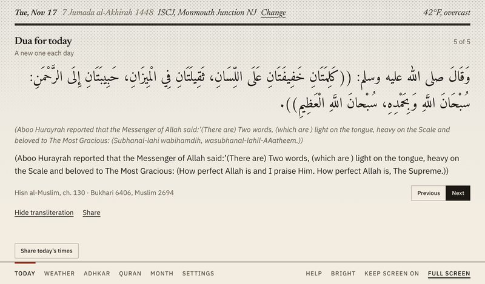

Chapter 3
Reading the Today screen
Today is the screen your tablet shows all day. Everything on it updates by itself, so there is nothing to tap unless you want to.
The Today screen


- The date, then the Hijri date in italics. Chapter 2 shows how to move the Hijri date a day if your local moon sighting differs.
- Where the times are for, and the weather now at the end of the line. Tap Change to set your place, or tap the weather to open the Weather tab.
- The clock, with seconds. Chapter 6 shows the other clock styles you can choose.
- The countdown to the next adhan or iqama, with its adhan and iqama times underneath. In the last 15 minutes the countdown is highlighted and flashes once a second, so you can see it from across the room.
- The weather at the next prayer, from the hourly forecast: the temperature, and rain or snow when it is likely.
- The day ruler: the day from an hour before Fajr to an hour after Isha. The inked part is the day so far, the red ring is now, and each prayer has a letter: F, rise for sunrise, D (J on Fridays), A, M and I. The next prayer’s letter is red.
- The five prayers, with the adhan time on the top row and the iqama time, in heavier type, underneath. The next prayer is in red. When the iqama is at the adhan, as it often is at Maghrib, it says on time.
- Sunrise and Jumu’ah. Sunrise is when the time for Fajr ends. Jumu’ah lists the khutbah times. On Fridays they show in the Dhuhr column instead.
The countdown, close up


- How long until the next adhan, or the iqama once the adhan has passed.
- Its adhan and iqama times. On Fridays it shows the khutbah times.
- The weather at that prayer. After Isha it is the weather at tomorrow’s Fajr.
- Now, on the day ruler.
Weather warnings


- While an official warning, watch or advisory from the US National Weather Service is in force where you are, a red-ruled line names it and says when it ends. If there is more than one, it shows the most serious and how many more there are. The line goes away by itself when it ends. It is for US locations only.
Under the timetable
Scroll down below the timetable for the dua and a few more things. Just above the dua, Sync now reads the iqama times and the weather again. The app also does this by itself: weather every 15 minutes, iqama times about every hour and at the start of each day, and straight away when the internet comes back. When a new version of the app is published, it updates itself at a quiet moment and puts the full screen view back.


- Previous and Next move between the duas for this time of day. The duas change with the time of day.
- Hide transliteration leaves just the Arabic and English. Share sends the dua to someone, and Listen to the full chapter, when it shows, plays it from Hisn al-Muslim (this needs the internet).
- Share today’s times sends today’s timetable to family or friends, by message or any app you choose.
Prayer names
The timetable shows each prayer’s name in English and in Arabic:
| English | Arabic |
|---|---|
| Fajr | الفجر |
| Sunrise | الشروق |
| Dhuhr | الظهر |
| Asr | العصر |
| Maghrib | المغرب |
| Isha | العشاء |
| Jumu’ah | الجمعة |
Good to know
- The line above Sync now says where the iqama times came from and when they last changed.
- The first time you open the app, a one-line note above the clock asks where you are. Chapter 2 explains the choices.